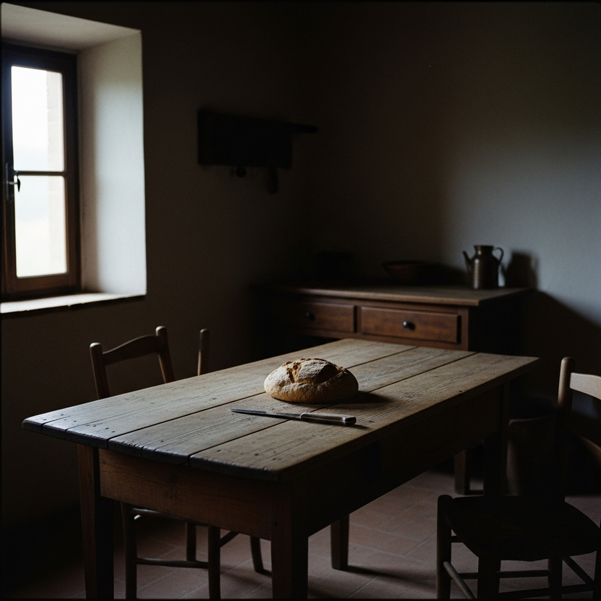
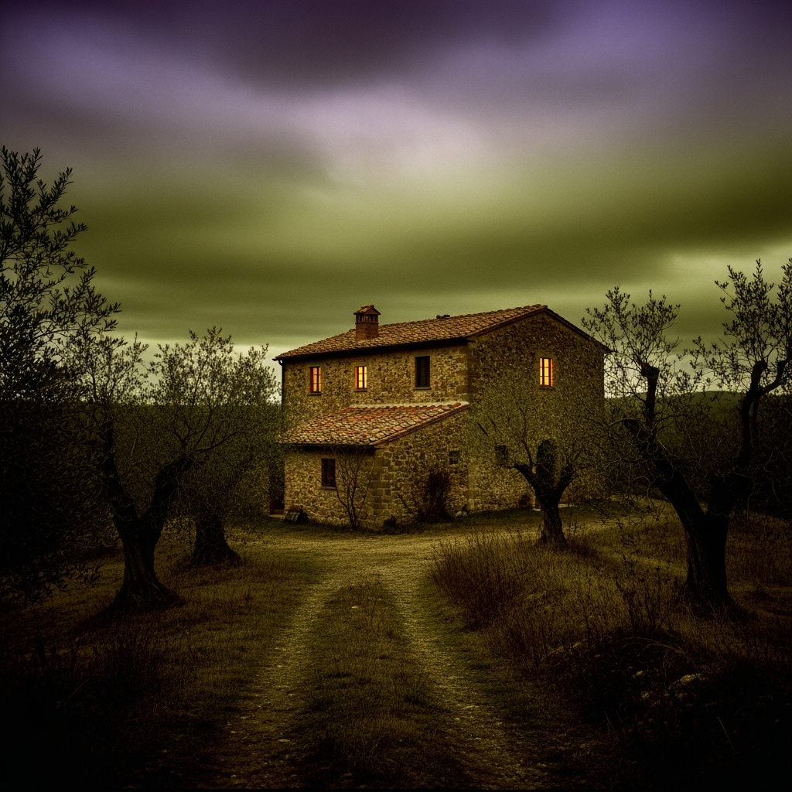
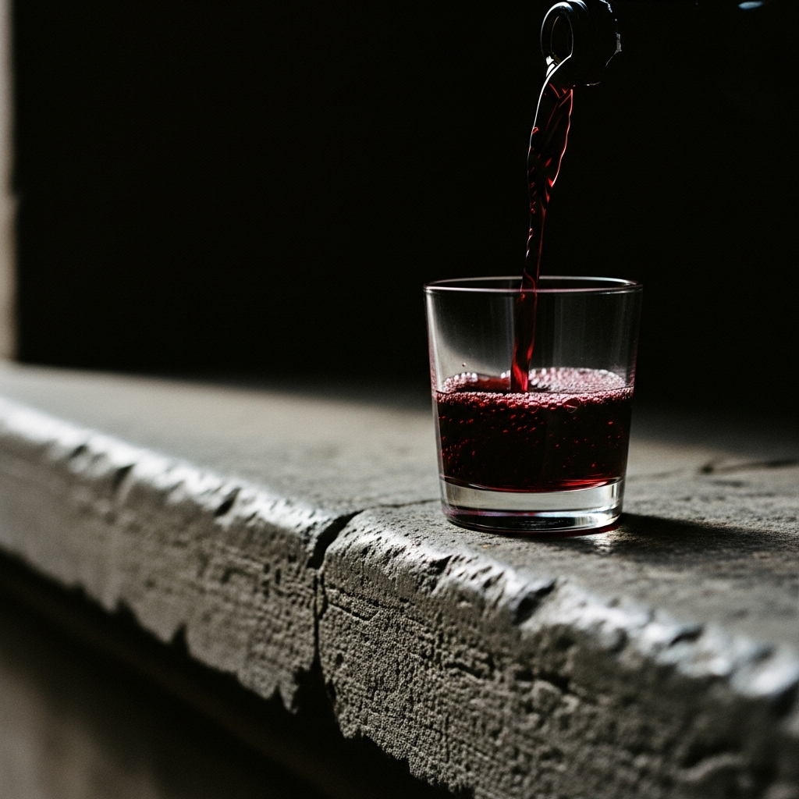
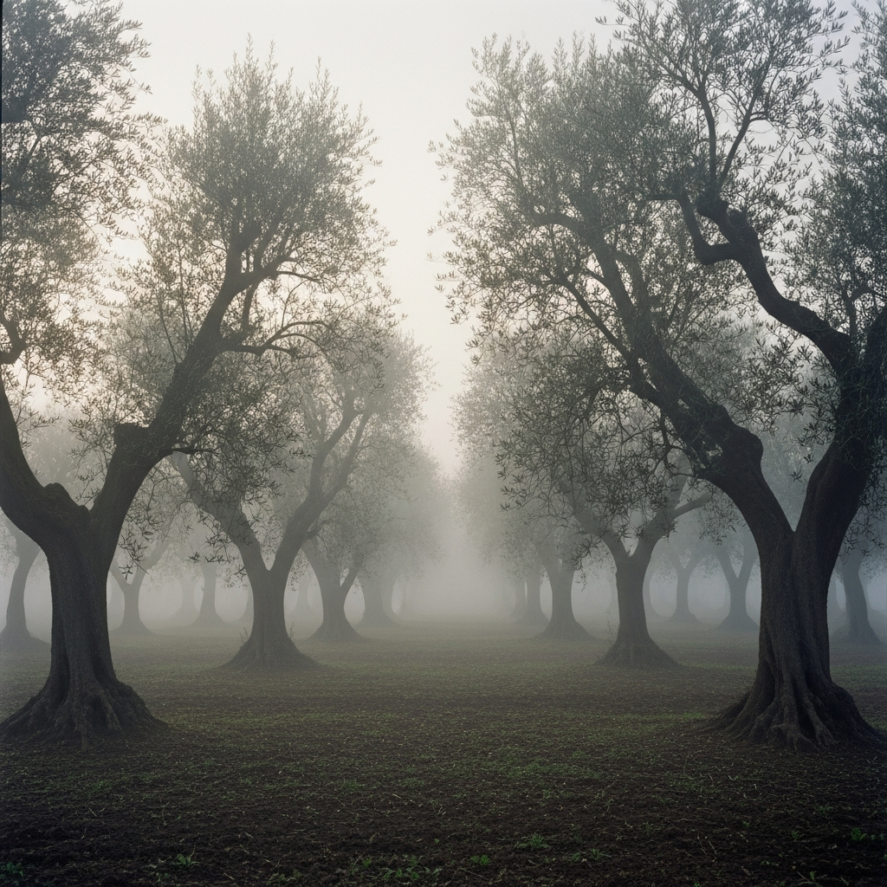
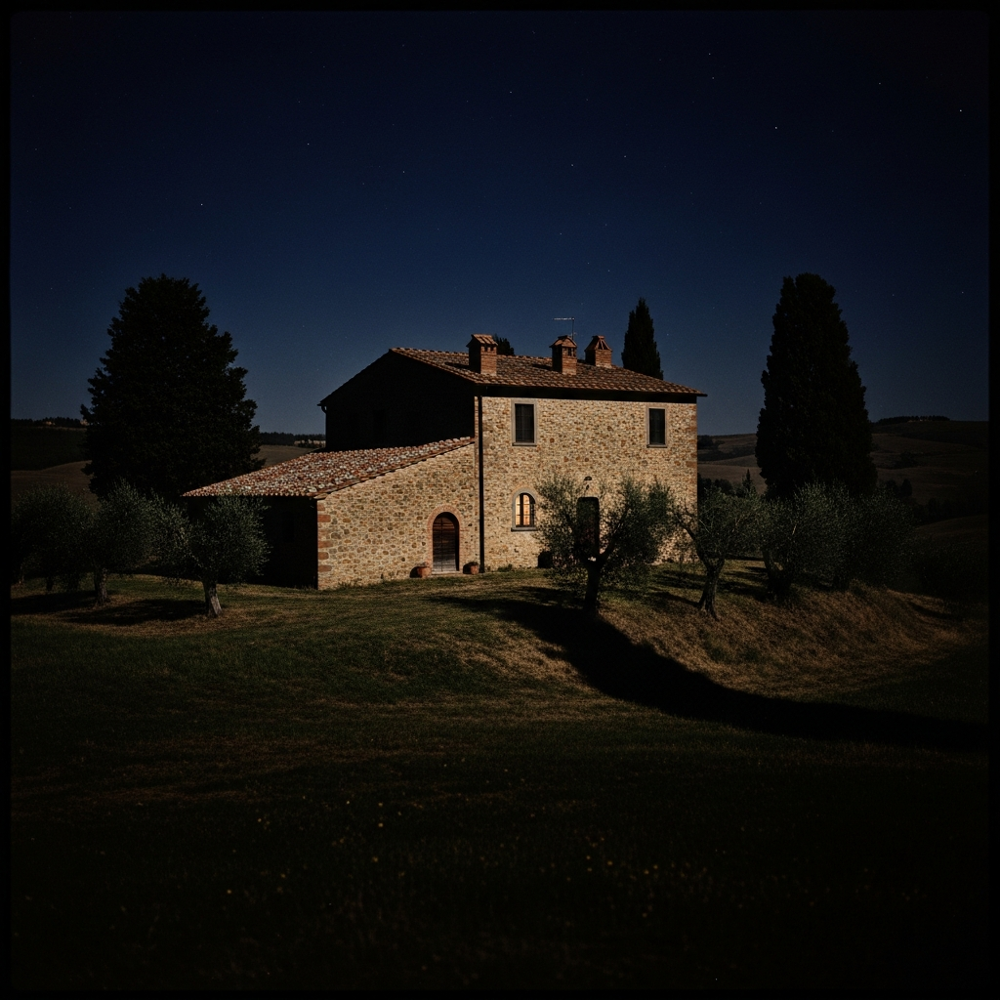
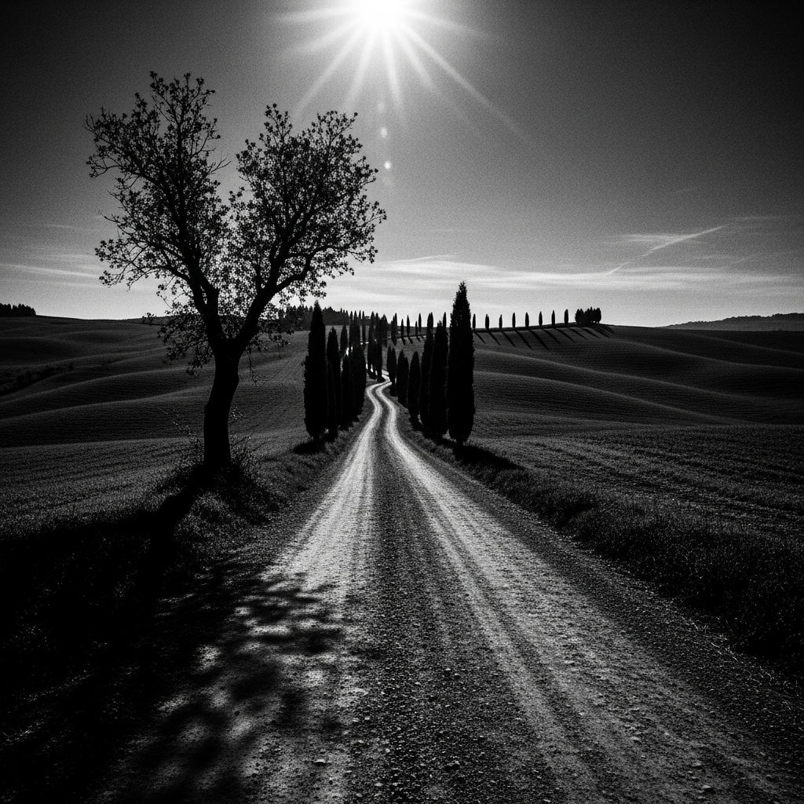
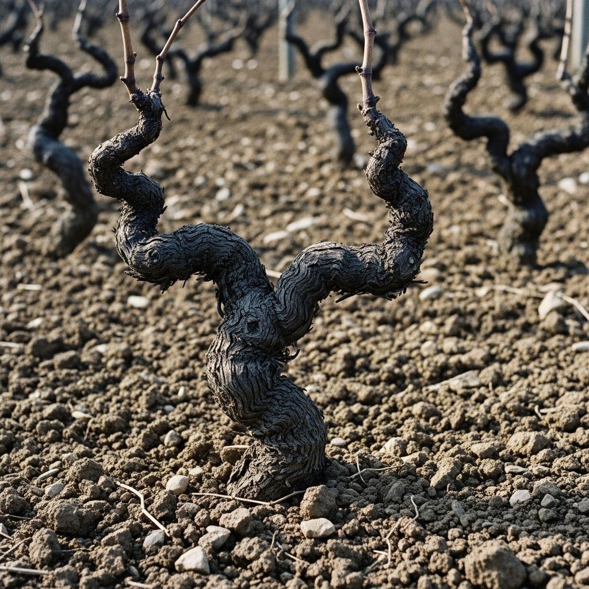
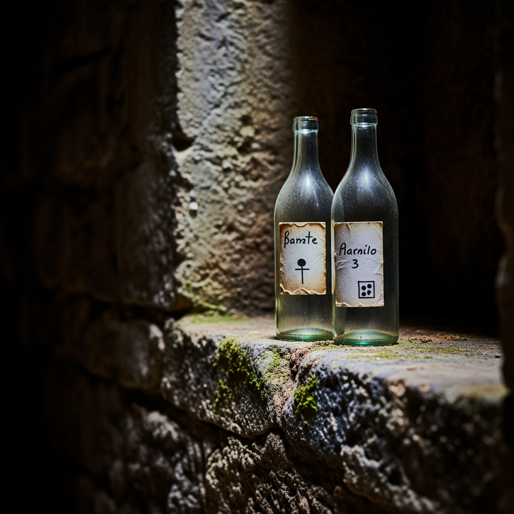
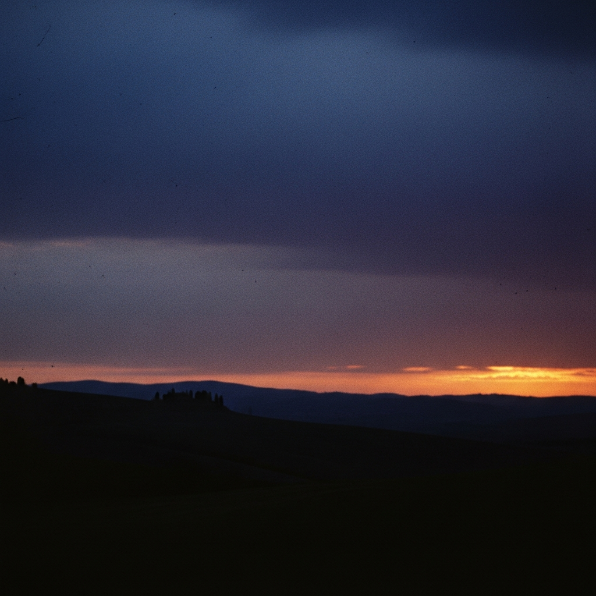

A FILM BY
FRANCESCA SCHICCHERA
Logline
When a car crash brings Peter to his door during a storm, the silence of the land is broken. A poetic fable about the weight of martyrdom and the fragile sanctuary of the vineyard.
The Observational Lens
Observational patience that finds the divine in manual labor and nature's silence. Not neorealism, but a structured poetry of the formal image.
Ensemble's Friction
A dysfunctional, earthly sense of group. Messy dynamics clashing with the stillness of the farm. Un-sacred friction within a group of friends.
Atmosphere
Violence disrupts the tranquility. High contrast between the formal beauty of the hills and the raw grit of human desperation.
Synopsis
ACT I: A storm leads Peter to a stone farmhouse. He finds Jesus, hidden in the vines for years. The past returns with the pull of a hood.
ACT II: The Apostles arrive with gifts and baggage. The clashing ensamle ensues as they debate the "Fourth Day"—a peace Mary Magdalene fights to keep.
ACT III: A festival miracle leads to a senseless modern end. The Messiah dies not on a cross, but on a desolate moonlit road.

The Farmer
Weathered, silent, content with the soil. A man of manual labor whose predestination is a ghost that cannot be outrun.
The Seeker
Restless and intellectual. He needs the myth to be real to justify his own life. He breaks the silence of the sanctuary.
The Guardian
Defiant and realistic. She sees the man, not the icon. She protects the domestic idyll against the coming storm.
The Companion
The realist. He understood the sacrifice before any of them. The one who truly shares the burden of the path.


The Olive Grove
The sanctuary of silence and ancient labor.

The Farmhouse
The stone pressure cooker of a dysfunctional reunion.

The Road
The desolate path to a modern-day Calvary.
Observation through an uncompromising formal rigor. Agonizing slow pans where the camera breathes with pain. A man compelling himself to live his predestined martyrdom. A clash of violence within an idyllic frame. High film grain, texture over perfection.
Embedded Production
"Farm-Sitter" Strategy: A 4-week immersive residency in a working Tuscan estate. Minimal crew. The cast inhabits the space 24/7, allowing the land to seep into the performance.
Authenticity is our production value. We are inhabiting a world where the harvest and the film are one.

The Exchange
Hosted by a family-run biological farm. In exchange for residency and catering, we produce cinematic marketing assets for their organic labels.
| Farm Asset | Film Exchange |
|---|---|
| Location & Housing | Oil & Wine Label Visuals |
| Catering (Home-grown) | Brand Documentary Shorts |
| Staff Support | Social Media Cinematic Assets |

Spring 2026
Pre-Production
Marketing Content Pilot for the Host Farm.
Autumn 2026
Principal Photography
Immersive harvest shoot.
Spring 2027
Festival Run
Premiere push. Post-production wrap.
